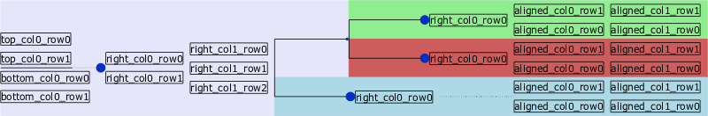
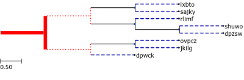
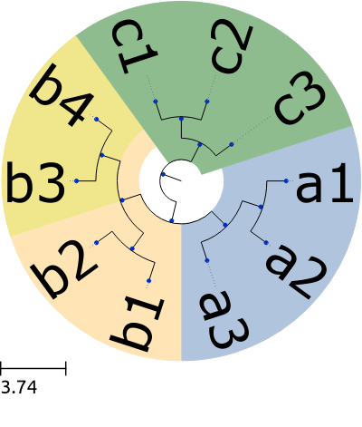
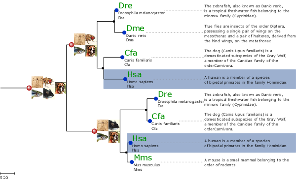
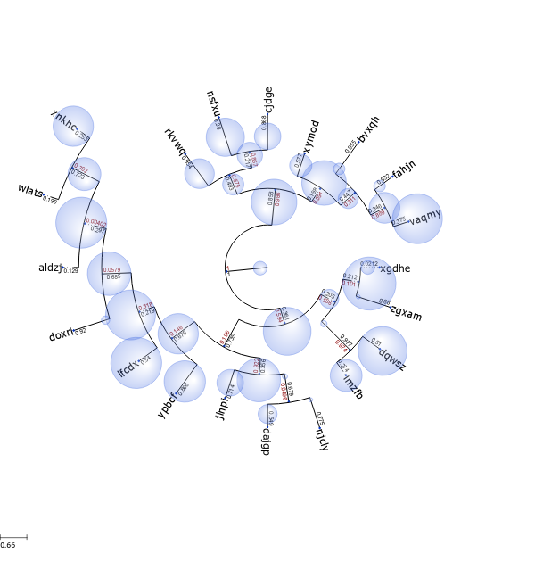
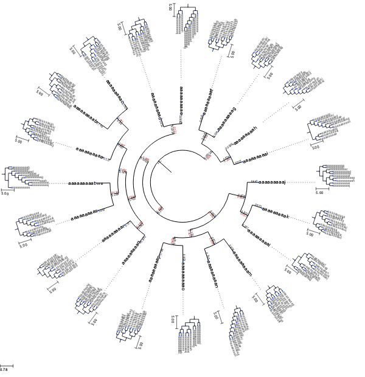
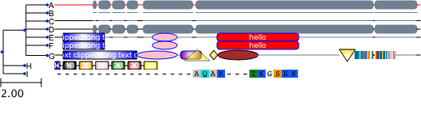
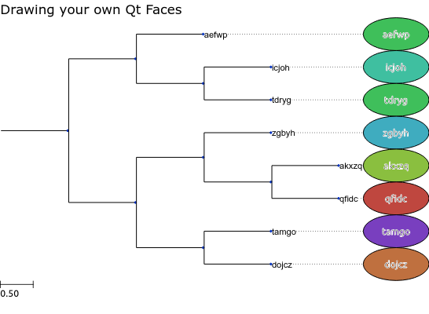

The Programmable Tree Drawing Engine¶
Contents
Overview¶
ETE’s treeview extension provides a highly programmable drawing system to render any hierarchical tree structure as PDF, SVG or PNG images. Although several predefined visualization layouts are included with the default installation, custom styles can be easily created from scratch.
Image customization is performed through four elements: a)
TreeStyle, setting general options about the image (shape,
rotation, etc.), b) NodeStyle, which defines the
specific aspect of each node (size, color, background, line type,
etc.), c) node faces.Face which are small pieces of extra
graphical information that can be added to nodes (text labels, images,
graphs, etc.) d) a layout function, a normal python
function that controls how node styles and faces are dynamically added
to nodes.
Images can be rendered as PNG, PDF or SVG files using the
TreeNode.render() method or interactively visualized using a
built-in Graphical User Interface (GUI) invoked by the
TreeNode.show() method.
Interactive visualization of trees¶
ETE’s tree drawing engine is fully integrated with a built-in
graphical user interface (GUI). Thus, ETE allows to visualize trees
using an interactive interface that allows to explore and manipulate
node’s properties and tree topology. To start the visualization of a
node (tree or subtree), you can simply call the TreeNode.show()
method.
One of the advantages of this on-line GUI visualization is that you can use it to interrupt a given program/analysis, explore the tree, manipulate them, and continuing with the execution thread. Note that changes made using the GUI will be kept after quiting the GUI. This feature is specially useful for using during python sessions, in which analyses are performed interactively.
The GUI allows many operations to be performed graphically, however it does not implement all the possibilities of the programming toolkit.
from ete3 import Tree
t = Tree( "((a,b),c);" )
t.show()
Rendering trees as images¶
Tree images can be directly written as image files. SVG, PDF and PNG formats are supported. Note that, while PNG images are raster images, PDF and SVG pictures are rendered as vector graphics, thus allowing its later modification and scaling.
To generate an image, the TreeNode.render() method should be
used instead of TreeNode.show(). The only required argument is
the file name, whose extension will determine the image format (.PDF,
.SVG or .PNG). Several parameters regarding the image size and
resolution can be adjusted:
| Argument | Description |
|---|---|
units |
“px”: pixels, “mm”: millimeters, “in”: inches |
h |
height of the image in units. |
w |
width of the image in units. |
dpi |
dots per inches. |
Note
If h and w values are both provided, image size
will be adjusted even if it requires to break the original aspect
ratio of the image. If only one value (h or w) is
provided, the other will be estimated to maintain aspect ratio. If
no sizing values are provided, image will be adjusted to A4
dimensions.
from ete3 import Tree
t = Tree( "((a,b),c);" )
t.render("mytree.png", w=183, units="mm")
Customizing the aspect of trees¶
Image customization is performed through four main elements:
Tree style¶
The TreeStyle class can be used to create a custom set of
options that control the general aspect of the tree image. Tree styles
can be passed to the TreeNode.show() and TreeNode.render()
methods. For instance, TreeStyle allows to modify the scale
used to render tree branches or choose between circular or rectangular
tree drawing modes.
from ete3 import Tree, TreeStyle
t = Tree( "((a,b),c);" )
circular_style = TreeStyle()
circular_style.mode = "c" # draw tree in circular mode
circular_style.scale = 20
t.render("mytree.png", w=183, units="mm", tree_style=circular_style)
Warning
A number of parameters can be controlled through custom
tree style objects, check TreeStyle documentation for a
complete list of accepted values.
Some common uses include:
Show leaf node names, branch length and branch support¶
Automatically adds node names and branch information to the tree image:
from ete3 import Tree, TreeStyle
t = Tree()
t.populate(10, random_dist=True)
ts = TreeStyle()
ts.show_leaf_name = True
ts.show_branch_length = True
ts.show_branch_support = True
t.show(tree_style=ts)
Change branch length scale (zoom in X)¶
Increases the length of the tree by changing the scale:
from ete3 import Tree, TreeStyle
t = Tree()
t.populate(10, random_dist=True)
ts = TreeStyle()
ts.show_leaf_name = True
ts.scale = 120 # 120 pixels per branch length unit
t.show(tree_style=ts)
Change branch separation between nodes (zoom in Y)¶
Increases the separation between leaf branches:
from ete3 import Tree, TreeStyle
t = Tree()
t.populate(10, random_dist=True)
ts = TreeStyle()
ts.show_leaf_name = True
ts.branch_vertical_margin = 10 # 10 pixels between adjacent branches
t.show(tree_style=ts)
Rotate a tree¶
Draws a rectangular tree from top to bottom:
from ete3 import Tree, TreeStyle
t = Tree()
t.populate(10)
ts = TreeStyle()
ts.show_leaf_name = True
ts.rotation = 90
t.show(tree_style=ts)
circular tree in 180 degrees¶
Draws a circular tree using a semi-circumference:
from ete3 import Tree, TreeStyle
t = Tree()
t.populate(30)
ts = TreeStyle()
ts.show_leaf_name = True
ts.mode = "c"
ts.arc_start = -180 # 0 degrees = 3 o'clock
ts.arc_span = 180
t.show(tree_style=ts)
Add legend and title¶
from ete3 import Tree, TreeStyle, TextFace
t = Tree( "((a,b),c);" )
ts = TreeStyle()
ts.show_leaf_name = True
ts.title.add_face(TextFace("Hello ETE", fsize=20), column=0)
t.show(tree_style=ts)
Node style¶
Through the NodeStyle class the aspect of each single node
can be controlled, including its size, color, background and branch type.
A node style can be defined statically and attached to several nodes:
Simple tree in which the same style is applied to all nodes:
from ete3 import Tree, NodeStyle, TreeStyle
t = Tree( "((a,b),c);" )
# Basic tree style
ts = TreeStyle()
ts.show_leaf_name = True
# Draws nodes as small red spheres of diameter equal to 10 pixels
nstyle = NodeStyle()
nstyle["shape"] = "sphere"
nstyle["size"] = 10
nstyle["fgcolor"] = "darkred"
# Gray dashed branch lines
nstyle["hz_line_type"] = 1
nstyle["hz_line_color"] = "#cccccc"
# Applies the same static style to all nodes in the tree. Note that,
# if "nstyle" is modified, changes will affect to all nodes
for n in t.traverse():
n.set_style(nstyle)
t.show(tree_style=ts)
If you want to draw nodes with different styles, an independent
NodeStyle instance must be created for each node. Note that
node styles can be modified at any moment by accessing the
TreeNode.img_style attribute.
Simple tree in which the different styles are applied to each node:
from ete3 import Tree, NodeStyle, TreeStyle
t = Tree( "((a,b),c);" )
# Basic tree style
ts = TreeStyle()
ts.show_leaf_name = True
# Creates an independent node style for each node, which is
# initialized with a red foreground color.
for n in t.traverse():
nstyle = NodeStyle()
nstyle["fgcolor"] = "red"
nstyle["size"] = 15
n.set_style(nstyle)
# Let's now modify the aspect of the root node
t.img_style["size"] = 30
t.img_style["fgcolor"] = "blue"
t.show(tree_style=ts)
Static node styles, set through the set_style() method, will be
attached to the nodes and exported as part of their information. For
instance, TreeNode.copy() will replicate all node styles in the
replicate tree. Note that node styles can be also modified on the fly
through a layout function (see layout functions)
Node faces¶
Node faces are small pieces of graphical information that can be linked to nodes. For instance, text labels or external images could be linked to nodes and they will be plotted within the tree image.
Several types of node faces are provided by the main ete3
module, ranging from simple text (TextFace) and geometric
shapes (CircleFace), to molecular sequence representations
(SequenceFace), heatmaps and profile plots
(ProfileFace). A complete list of available faces can be
found at the ete3.treeview reference page..
Faces position¶
Faces can be added to different areas around the node, namely
branch-right, branch-top, branch-bottom or aligned.
Each area represents a table in which faces can be added through the
TreeNode.add_face() method. For instance, if two text labels
want to be drawn bellow the branch line of a given node, a pair of
TextFace faces can be created and added to the columns 0
and 1 of the branch-bottom area:
from ete3 import Tree, TreeStyle, TextFace
t = Tree( "((a,b),c);" )
# Basic tree style
ts = TreeStyle()
ts.show_leaf_name = True
# Add two text faces to different columns
t.add_face(TextFace("hola "), column=0, position = "branch-right")
t.add_face(TextFace("mundo!"), column=1, position = "branch-right")
t.show(tree_style=ts)
If you add more than one face to the same area and column, they will be piled up. See the following image as an example of face positions:

Source codeused to generate the above image.
Note
Once a face object is created, it can be linked to one or more nodes. For instance, the same text label can be recycled and added to several nodes.
Face properties¶
Apart from the specific config values of each face type, all face
instances contain same basic attributes that permit to modify general
aspects such as margins, background colors, border, etc. A complete
list of face attributes can be found in the general Face
class documentation. Here is a very simple example:
Basic use of face general attributes
from ete3 import Tree, TreeStyle, TextFace
t = Tree( "(a,b);" )
# Basic tree style
ts = TreeStyle()
ts.show_leaf_name = True
# Creates two faces
hola = TextFace("hola")
mundo = TextFace("mundo")
# Set some attributes
hola.margin_top = 10
hola.margin_right = 10
hola.margin_left = 10
hola.margin_bottom = 10
hola.opacity = 0.5 # from 0 to 1
hola.inner_border.width = 1 # 1 pixel border
hola.inner_border.type = 1 # dashed line
hola.border.width = 1
hola.background.color = "LightGreen"
t.add_face(hola, column=0, position = "branch-top")
t.add_face(mundo, column=1, position = "branch-bottom")
t.show(tree_style=ts)
layout functions¶
Layout functions act as pre-drawing hooking functions. This means, when a node is about to be drawn, it is first sent to a layout function. Node properties, style and faces can be then modified on the fly and return it to the drawer engine. Thus, layout functions can be understood as a collection of rules controlling how different nodes should be drawn.
from ete3 import Tree
t = Tree( "((((a,b),c), d), e);" )
def abc_layout(node):
vowels = set(["a", "e", "i", "o", "u"])
if node.name in vowels:
# Note that node style are already initialized with the
# default values
node.img_style["size"] = 15
node.img_style["color"] = "red"
# Basic tree style
ts = TreeStyle()
ts.show_leaf_name = True
# Add two text faces to different columns
t.add_face(TextFace("hola "), column=0, position = "branch-right")
t.add_face(TextFace("mundo!"), column=1, position = "branch-right")
t.show(tree_style=ts)
Combining styles, faces and layouts¶
Examples are probably the best way to show how ETE works:
Fixed node styles¶
from ete3 import Tree, faces, AttrFace, TreeStyle, NodeStyle def layout(node): # If node is a leaf, add the nodes name and a its scientific name if node.is_leaf(): faces.add_face_to_node(AttrFace("name"), node, column=0) def get_example_tree(): t = Tree() t.populate(8) # Node style handling is no longer limited to layout functions. You # can now create fixed node styles and use them many times, save them # or even add them to nodes before drawing (this allows to save and # reproduce an tree image design) # Set bold red branch to the root node style = NodeStyle() style["fgcolor"] = "#0f0f0f" style["size"] = 0 style["vt_line_color"] = "#ff0000" style["hz_line_color"] = "#ff0000" style["vt_line_width"] = 8 style["hz_line_width"] = 8 style["vt_line_type"] = 0 # 0 solid, 1 dashed, 2 dotted style["hz_line_type"] = 0 t.set_style(style) #Set dotted red lines to the first two branches style1 = NodeStyle() style1["fgcolor"] = "#0f0f0f" style1["size"] = 0 style1["vt_line_color"] = "#ff0000" style1["hz_line_color"] = "#ff0000" style1["vt_line_width"] = 2 style1["hz_line_width"] = 2 style1["vt_line_type"] = 2 # 0 solid, 1 dashed, 2 dotted style1["hz_line_type"] = 2 t.children[0].img_style = style1 t.children[1].img_style = style1 # Set dashed blue lines in all leaves style2 = NodeStyle() style2["fgcolor"] = "#000000" style2["shape"] = "circle" style2["vt_line_color"] = "#0000aa" style2["hz_line_color"] = "#0000aa" style2["vt_line_width"] = 2 style2["hz_line_width"] = 2 style2["vt_line_type"] = 1 # 0 solid, 1 dashed, 2 dotted style2["hz_line_type"] = 1 for l in t.iter_leaves(): l.img_style = style2 ts = TreeStyle() ts.layout_fn = layout ts.show_leaf_name = False return t, ts if __name__ == "__main__": t, ts = get_example_tree() t.show(tree_style=ts) #t.render("node_style.png", w=400, tree_style=ts)
Node backgrounds¶
from ete3 import Tree, faces, AttrFace, TreeStyle, NodeStyle def layout(node): if node.is_leaf(): N = AttrFace("name", fsize=30) faces.add_face_to_node(N, node, 0, position="aligned") def get_example_tree(): # Set dashed blue lines in all leaves nst1 = NodeStyle() nst1["bgcolor"] = "LightSteelBlue" nst2 = NodeStyle() nst2["bgcolor"] = "Moccasin" nst3 = NodeStyle() nst3["bgcolor"] = "DarkSeaGreen" nst4 = NodeStyle() nst4["bgcolor"] = "Khaki" t = Tree("((((a1,a2),a3), ((b1,b2),(b3,b4))), ((c1,c2),c3));") for n in t.traverse(): n.dist = 0 n1 = t.get_common_ancestor("a1", "a2", "a3") n1.set_style(nst1) n2 = t.get_common_ancestor("b1", "b2", "b3", "b4") n2.set_style(nst2) n3 = t.get_common_ancestor("c1", "c2", "c3") n3.set_style(nst3) n4 = t.get_common_ancestor("b3", "b4") n4.set_style(nst4) ts = TreeStyle() ts.layout_fn = layout ts.show_leaf_name = False ts.mode = "c" ts.root_opening_factor = 1 return t, ts if __name__ == "__main__": t, ts = get_example_tree() #t.render("node_background.png", w=400, tree_style=ts) t.show(tree_style=ts)
Img Faces¶

Note that images are attached to terminal and internal nodes.
# Import Tree instance and faces module from ete3 import Tree, faces, TreeStyle # Loads an example tree nw = """ (((Dre:0.008339,Dme:0.300613)1.000000:0.596401, (Cfa:0.640858,Hsa:0.753230)1.000000:0.182035)1.000000:0.106234, ((Dre:0.271621,Cfa:0.046042)1.000000:0.953250, (Hsa:0.061813,Mms:0.110769)1.000000:0.204419)1.000000:0.973467); """ t = Tree(nw) # You can create any random tree containing the same leaf names, and # layout will work equally # # t = Tree() # Creates a random tree with 8 leaves using a given set of names # t.populate(8, ["Dme", "Dre", "Hsa", "Ptr", "Cfa", "Mms"]) # Set the path in which images are located img_path = "./" # Create faces based on external images humanFace = faces.ImgFace(img_path+"human.png") mouseFace = faces.ImgFace(img_path+"mouse.png") dogFace = faces.ImgFace(img_path+"dog.png") chimpFace = faces.ImgFace(img_path+"chimp.png") fishFace = faces.ImgFace(img_path+"fish.png") flyFace = faces.ImgFace(img_path+"fly.png") # Create a faces ready to read the name attribute of nodes #nameFace = faces.TextFace(open("text").readline().strip(), fsize=20, fgcolor="#009000") nameFace = faces.AttrFace("name", fsize=20, fgcolor="#009000") # Create a conversion between leaf names and real names code2name = { "Dre":"Drosophila melanogaster", "Dme":"Danio rerio", "Hsa":"Homo sapiens", "Ptr":"Pan troglodytes", "Mms":"Mus musculus", "Cfa":"Canis familiaris" } # Creates a dictionary with the descriptions of each leaf name code2desc = { "Dre":"""The zebrafish, also known as Danio rerio, is a tropical freshwater fish belonging to the minnow family (Cyprinidae).""", "Dme":"""True flies are insects of the order Diptera, possessing a single pair of wings on the mesothorax and a pair of halteres, derived from the hind wings, on the metathorax""", "Hsa":"""A human is a member of a species of bipedal primates in the family Hominidae.""", "Ptr":"""Chimpanzee, sometimes colloquially chimp, is the common name for the two extant species of ape in the genus Pan.""", "Mms":"""A mouse is a small mammal belonging to the order of rodents.""", "Cfa": """The dog (Canis lupus familiaris) is a domesticated subspecies of the Gray Wolf, a member of the Canidae family of the orderCarnivora.""" } # Creates my own layout function. I will use all previously created # faces and will set different node styles depending on the type of # node. def mylayout(node): # If node is a leaf, add the nodes name and a its scientific # name if node.is_leaf(): # Add an static face that handles the node name faces.add_face_to_node(nameFace, node, column=0) # We can also create faces on the fly longNameFace = faces.TextFace(code2name[node.name]) faces.add_face_to_node(longNameFace, node, column=0) # text faces support multiline. We add a text face # with the whole description of each leaf. descFace = faces.TextFace(code2desc[node.name], fsize=10) descFace.margin_top = 10 descFace.margin_bottom = 10 descFace.border.margin = 1 # Note that this faces is added in "aligned" mode faces.add_face_to_node(descFace, node, column=0, aligned=True) # Sets the style of leaf nodes node.img_style["size"] = 12 node.img_style["shape"] = "circle" #If node is an internal node else: # Sets the style of internal nodes node.img_style["size"] = 6 node.img_style["shape"] = "circle" node.img_style["fgcolor"] = "#000000" # If an internal node contains more than 4 leaves, add the # images of the represented species sorted in columns of 2 # images max. if len(node)>=4: col = 0 for i, name in enumerate(set(node.get_leaf_names())): if i>0 and i%2 == 0: col += 1 # Add the corresponding face to the node if name.startswith("Dme"): faces.add_face_to_node(flyFace, node, column=col) elif name.startswith("Dre"): faces.add_face_to_node(fishFace, node, column=col) elif name.startswith("Mms"): faces.add_face_to_node(mouseFace, node, column=col) elif name.startswith("Ptr"): faces.add_face_to_node(chimpFace, node, column=col) elif name.startswith("Hsa"): faces.add_face_to_node(humanFace, node, column=col) elif name.startswith("Cfa"): faces.add_face_to_node(dogFace, node, column=col) # Modifies this node's style node.img_style["size"] = 16 node.img_style["shape"] = "sphere" node.img_style["fgcolor"] = "#AA0000" # If leaf is "Hsa" (homo sapiens), highlight it using a # different background. if node.is_leaf() and node.name.startswith("Hsa"): node.img_style["bgcolor"] = "#9db0cf" # And, finally, Visualize the tree using my own layout function ts = TreeStyle() ts.layout_fn = mylayout t.render("img_faces.png", w=600, tree_style = ts)
Bubble tree maps¶
import random from ete3 import Tree, TreeStyle, NodeStyle, faces, AttrFace, CircleFace def layout(node): if node.is_leaf(): # Add node name to laef nodes N = AttrFace("name", fsize=14, fgcolor="black") faces.add_face_to_node(N, node, 0) if "weight" in node.features: # Creates a sphere face whose size is proportional to node's # feature "weight" C = CircleFace(radius=node.weight, color="RoyalBlue", style="sphere") # Let's make the sphere transparent C.opacity = 0.3 # And place as a float face over the tree faces.add_face_to_node(C, node, 0, position="float") def get_example_tree(): # Random tree t = Tree() t.populate(20, random_branches=True) # Some random features in all nodes for n in t.traverse(): n.add_features(weight=random.randint(0, 50)) # Create an empty TreeStyle ts = TreeStyle() # Set our custom layout function ts.layout_fn = layout # Draw a tree ts.mode = "c" # We will add node names manually ts.show_leaf_name = False # Show branch data ts.show_branch_length = True ts.show_branch_support = True return t, ts if __name__ == "__main__": t, ts = get_example_tree() #t.render("bubble_map.png", w=600, dpi=300, tree_style=ts) t.show(tree_style=ts)
Trees within trees¶
import random from ete3 import Tree, TreeStyle, NodeStyle, faces, AttrFace, TreeFace # Tree Style used to render small trees used as leaf faces small_ts = TreeStyle() small_ts.show_leaf_name = True small_ts.scale = 10 def layout(node): if node.is_leaf(): # Add node name to laef nodes N = AttrFace("name", fsize=14, fgcolor="black") faces.add_face_to_node(N, node, 0) t = Tree() t.populate(10) T = TreeFace(t, small_ts) # Let's make the sphere transparent T.opacity = 0.8 # And place as a float face over the tree faces.add_face_to_node(T, node, 1, position="aligned") def get_example_tree(): # Random tree t = Tree() t.populate(20, random_branches=True) # Some random features in all nodes for n in t.traverse(): n.add_features(weight=random.randint(0, 50)) # Create an empty TreeStyle ts = TreeStyle() # Set our custom layout function ts.layout_fn = layout # Draw a tree ts.mode = "c" # We will add node names manually ts.show_leaf_name = False # Show branch data ts.show_branch_length = True ts.show_branch_support = True return t, ts if __name__ == "__main__": t, ts = get_example_tree() #t.render("tree_faces.png", w=600, dpi=300, tree_style=ts) t.show(tree_style=ts)
Phylogenetic trees and sequence domains¶
import sys from ete3 import Tree, SeqMotifFace, TreeStyle, add_face_to_node seq = ("-----------------------------------------------AQAK---IKGSKKAIKVFSSA---" "APERLQEYGSIFTDA---GLQRRPRHRIQSK-------ALQEKLKDFPVCVSTKPEPEDDAEEGLGGLPSN" "ISSVSSLLLFNTTENLYKKYVFLDPLAG----THVMLGAETEEKLFDAPLSISKREQLEQQVPENYFYVPD" "LGQVPEIDVPSYLPDLPGIANDLMYIADLGPGIAPSAPGTIPELPTFHTEVAEPLKVGELGSGMGAGPGTP" "AHTPSSLDTPHFVFQTYKMGAPPLPPSTAAPVGQGARQDDSSSSASPSVQGAPREVVDPSGGWATLLESIR" "QAGGIGKAKLRSMKERKLEKQQQKEQEQVRATSQGGHL--MSDLFNKLVMRRKGISGKGPGAGDGPGGAFA" "RVSDSIPPLPPPQQPQAEDED----") mixed_motifs = [ # seq.start, seq.end, shape, width, height, fgcolor, bgcolor [10, 100, "[]", None, 10, "black", "rgradient:blue", "arial|8|white|long text clipped long text clipped"], [101, 150, "o", None, 10, "blue", "pink", None], [155, 180, "()", None, 10, "blue", "rgradient:purple", None], [160, 190, "^", None, 14, "black", "yellow", None], [191, 200, "<>", None, 12, "black", "rgradient:orange", None], [201, 250, "o", None, 12, "black", "brown", None], [351, 370, "v", None, 15, "black", "rgradient:gold", None], [370, 420, "compactseq", 2, 10, None, None, None], ] simple_motifs = [ # seq.start, seq.end, shape, width, height, fgcolor, bgcolor [10, 60, "[]", None, 10, "black", "rgradient:blue", "arial|8|white|long text clipped long text clipped"], [120, 150, "o", None, 10, "blue", "pink", None], [200, 300, "()", None, 10, "blue", "red", "arial|8|white|hello"], ] box_motifs = [ # seq.start, seq.end, shape, width, height, fgcolor, bgcolor [0, 5, "[]", None, 10, "black", "rgradient:blue", "arial|8|white|10"], [10, 25, "[]", None, 10, "black", "rgradient:ref", "arial|8|white|10"], [30, 45, "[]", None, 10, "black", "rgradient:orange", "arial|8|white|20"], [50, 65, "[]", None, 10, "black", "rgradient:pink", "arial|8|white|20"], [70, 85, "[]", None, 10, "black", "rgradient:green", "arial|8|white|20"], [90, 105, "[]", None, 10, "black", "rgradient:brown", "arial|8|white|20"], [110, 125, "[]", None, 10, "black", "rgradient:yellow", "arial|8|white|20"], ] def get_example_tree(): # Create a random tree and add to each leaf a random set of motifs # from the original set t = Tree("( (A, B, C, D, E, F, G), H, I);") seqFace = SeqMotifFace(seq, gapcolor="red") (t & "A").add_face(seqFace, 0, "aligned") seqFace = SeqMotifFace(seq, seq_format="line", gap_format="blank") (t & "B").add_face(seqFace, 0, "aligned") seqFace = SeqMotifFace(seq, seq_format="line") (t & "C").add_face(seqFace, 0, "aligned") seqFace = SeqMotifFace(seq, seq_format="()") (t & "D").add_face(seqFace, 0, "aligned") seqFace = SeqMotifFace(seq, motifs=simple_motifs, seq_format="-") (t & "E").add_face(seqFace, 0, "aligned") seqFace = SeqMotifFace(seq=None, motifs=simple_motifs, gap_format="blank") (t & "F").add_face(seqFace, 0, "aligned") seqFace = SeqMotifFace(seq, motifs=mixed_motifs, seq_format="-") (t & "G").add_face(seqFace, 0, "aligned") seqFace = SeqMotifFace(seq=None, motifs=box_motifs, gap_format="line") (t & "H").add_face(seqFace, 0, "aligned") seqFace = SeqMotifFace(seq[30:60], seq_format="seq") (t & "I").add_face(seqFace, 0, "aligned") return t if __name__ == '__main__': t = get_example_tree() ts = TreeStyle() ts.tree_width = 50 #t.show(tree_style=ts) t.render("seq_motif_faces.png", tree_style=ts)
Creating your custom interactive Item faces¶

Note that item faces shown in this image are not static. When the tree is view using the tree.show() method, you can interact with items.
# We will need to create Qt4 items from PyQt4 import QtCore from PyQt4.QtGui import QGraphicsRectItem, QGraphicsSimpleTextItem, \ QGraphicsEllipseItem, QColor, QPen, QBrush from ete3 import Tree, faces, TreeStyle, NodeStyle # To play with random colors import colorsys import random class InteractiveItem(QGraphicsRectItem): def __init__(self, *arg, **karg): QGraphicsRectItem.__init__(self, *arg, **karg) self.node = None self.label = None self.setCursor(QtCore.Qt.PointingHandCursor) self.setAcceptsHoverEvents(True) def hoverEnterEvent (self, e): # There are many ways of adding interactive elements. With the # following code, I show/hide a text item over my custom # DynamicItemFace if not self.label: self.label = QGraphicsRectItem() self.label.setParentItem(self) # This is to ensure that the label is rendered over the # rest of item children (default ZValue for items is 0) self.label.setZValue(1) self.label.setBrush(QBrush(QColor("white"))) self.label.text = QGraphicsSimpleTextItem() self.label.text.setParentItem(self.label) self.label.text.setText(self.node.name) self.label.setRect(self.label.text.boundingRect()) self.label.setVisible(True) def hoverLeaveEvent(self, e): if self.label: self.label.setVisible(False) def random_color(h=None): """Generates a random color in RGB format.""" if not h: h = random.random() s = 0.5 l = 0.5 return _hls2hex(h, l, s) def _hls2hex(h, l, s): return '#%02x%02x%02x' %tuple(map(lambda x: int(x*255), colorsys.hls_to_rgb(h, l, s))) def ugly_name_face(node, *args, **kargs): """ This is my item generator. It must receive a node object, and returns a Qt4 graphics item that can be used as a node face. """ # receive an arbitrary number of arguments, in this case width and # height of the faces width = args[0][0] height = args[0][1] ## Creates a main master Item that will contain all other elements ## Items can be standard QGraphicsItem # masterItem = QGraphicsRectItem(0, 0, width, height) # Or your custom Items, in which you can re-implement interactive # functions, etc. Check QGraphicsItem doc for details. masterItem = InteractiveItem(0, 0, width, height) # Keep a link within the item to access node info masterItem.node = node # I dont want a border around the masterItem masterItem.setPen(QPen(QtCore.Qt.NoPen)) # Add ellipse around text ellipse = QGraphicsEllipseItem(masterItem.rect()) ellipse.setParentItem(masterItem) # Change ellipse color ellipse.setBrush(QBrush(QColor( random_color()))) # Add node name within the ellipse text = QGraphicsSimpleTextItem(node.name) text.setParentItem(ellipse) text.setPen(QPen(QPen(QColor("white")))) # Center text according to masterItem size tw = text.boundingRect().width() th = text.boundingRect().height() center = masterItem.boundingRect().center() text.setPos(center.x()-tw/2, center.y()-th/2) return masterItem def master_ly(node): if node.is_leaf(): # Create an ItemFAce. First argument must be the pointer to # the constructor function that returns a QGraphicsItem. It # will be used to draw the Face. Next arguments are arbitrary, # and they will be forwarded to the constructor Face function. F = faces.DynamicItemFace(ugly_name_face, 100, 50) faces.add_face_to_node(F, node, 0, position="aligned") def get_example_tree(): t = Tree() t.populate(8, reuse_names=False) ts = TreeStyle() ts.layout_fn = master_ly ts.title.add_face(faces.TextFace("Drawing your own Qt Faces", fsize=15), 0) return t, ts if __name__ == "__main__": t, ts = get_example_tree() #t.render("item_faces.png", h=400, tree_style=ts) # The interactive features are only available using the GUI t.show(tree_style=ts)